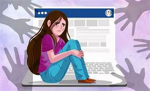

¿Qué significa respetar los derechos sexuales en línea?
Respetar los derechos sexuales en el ciberespacio implica actuar con responsabilidad, empatía y cuidado hacia los demás. Cada persona tiene derecho a la privacidad, al consentimiento y a expresar su identidad sin ser juzgada ni acosada. Estos derechos deben protegerse igual que en la vida real, ya que el daño digital también tiene consecuencias emocionales y sociales.
Compromisos que debemos asumir
No compartir imágenes íntimas sin consentimiento.
Denunciar contenidos que vulneren la privacidad o integridad sexual.
Promover el respeto y la educación sexual en redes sociales.
Reflexionar antes de publicar o reenviar cualquier contenido.
Fomentar el diálogo sobre la igualdad y la empatía digital.
Violencia y Acoso Sexual en Línea
La violencia de género incluye conductas de acoso, intimidación o agresión que se dan también en el ciberespacio. El acoso sexual, ya sea mediante mensajes, imágenes o comentarios ofensivos, vulnera la dignidad y los derechos de las personas. Es fundamental identificar estas conductas y denunciarlas para crear un entorno digital seguro para todas las personas.
Ciberacoso: Una Amenaza Real
El ciberacoso consiste en el uso de medios digitales para hostigar, intimidar o humillar a otras personas. Este tipo de violencia puede causar daños psicológicos profundos y afectar la autoestima. Aprender a reconocer el ciberacoso y utilizar las herramientas para denunciarlo es clave para protegernos y proteger a otros.

Desigualdad de Género en el Ciberespacio
La desigualdad de género se refleja en las oportunidades y el trato que reciben las personas según su identidad de género. En el ciberespacio, esta desigualdad se traduce en discriminación, exclusión y violencia digital hacia mujeres y personas LGBTQ+. Promover la igualdad digital es indispensable para un espacio inclusivo y respetuoso.
Embarazo No Deseado: Prevención e Información
El embarazo no deseado es una situación que puede afectar la salud, educación y desarrollo personal. La prevención a través de la educación sexual integral, el acceso a métodos anticonceptivos y la comunicación abierta es vital. En el entorno digital, promover información confiable y accesible ayuda a evitar embarazos no planeados.
Prevención de Riesgos y Protección Digital
Utilizar contraseñas seguras y cambiar las regularmente.
No compartir datos personales o imágenes sensibles sin control.
Denunciar cualquier contenido que atente contra la dignidad o los derechos sexuales.
Informarse y educarse sobre derechos digitales y herramientas de protección.
Fomentar el respeto y la empatía en todas las interacciones en línea.
Video educativo sobre derechos digitales
Mira este video que explica cómo proteger tu identidad y respetar los derechos de los demás en línea.
Escucha este mensaje reflexivo
Este mensaje te invita a reflexionar sobre la importancia del respeto, la empatía
y la responsabilidad en los espacios digitales. Recuerda que cada acción en línea
puede generar un impacto real en la vida de otras personas.
Cómo ejercer nuestros derechos en el ciberespacio
Aprende a identificar comportamientos inadecuados y reportarlos en redes sociales.
Usa contraseñas seguras y protege tu información personal.
Infórmate sobre las leyes digitales y tus derechos como usuario.
Sé ejemplo de respeto, igualdad y empatía en todos tus espacios virtuales.